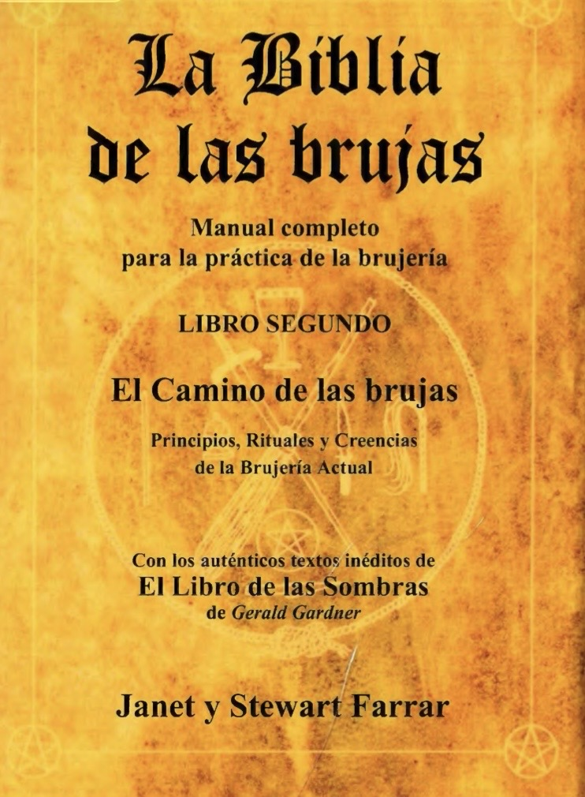

⏳ Disponible por tiempo limitado

Este libro reúne principios, rituales y enseñanzas fundamentales dentro de la práctica de la brujería moderna.
✔ Principios de la brujería
✔ Rituales completos
✔ Creencias y fundamentos
✔ Prácticas espirituales
✔ Conocimiento tradicional
✔ Comprender la brujería real
✔ Fortalecer tu práctica
✔ Conectar con tu energía
✔ Evolucionar espiritualmente
Solo quienes buscan entender realmente este camino deben acceder.
Más de 100 personas ya accedieron